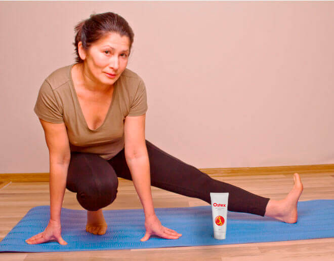

Come affrontare il mal di schiena da lavoro sedentario? Consigli di una contabile con 25 anni di esperienza
esperta finanziaria, blogger
1209 visualizzazioni 373
Ciao a tutti! 
Quando ero bambina, mia madre diceva sempre:
"Applicati nello studio, Ida, o finirai come me, a spaccarti la schiena per tutta la vita.
Lei era bracciante e lavorava duramente in un’azienda agricola.
Ma il lavoro in ufficio non è più facile di quello nei campi con la zappa. Quando si è giovani, trascorrere 8, 12 ore davanti al p.c. non è un problema. Poi le ore diventano giorni e i giorni diventano anni... E nell'avvicinarmi ai 40 anni, il mio collo ha cominciato a diventare insensibile a causa del lavoro sedentario e ho iniziato a soffrire di una lombalgia cronica.
Prendevo degli antidolorifici, applicavo il diclofenac sulla parte dolorante e andavo al lavoro. Poi, pillole e creme hanno smesso di fare effetto.
Sono andata in clinica e il medico mi ha diagnosticato una fibromialgia, ha trovato diverse ernie e protrusioni e mi ha mandata a fare un massaggio terapeutico: 3-4 cicli di 10-15 sessioni all'anno. La procedura era costosa anche per il mio stipendio. Ho fatto due cicli e poi ho finito i soldi.
Li ho chiesti in prestito a mio figlio. Ma lui mi ha detto: “Mamma, basta sciocchezze! Eccoti un crema riscaldante: ti sentirai rinfrescata entro due settimane!” - e mi ha dato un tubetto di crema.
Mio figlio mi ha detto che, con questo crema, il suo mal di schiena, è sparito nel giro di un mese. Lui fa il programmatore e come me, soffriva di dolori alla schiena e alle articolazioni. Ora non fa che prendere in braccio il mio nipotino!
Quando sono tornata a casa, ho letto le istruzioni- Tutto ciò che dovevo fare era spalmare il crema sulle aree doloranti al mattino e alla sera, lasciando che si assorbisse. Dopo aver messo il crema sulle aree problematiche, era consentito fare dei piccoli esercizi. 
Questo crema si applica con delicati movimenti massaggianti. Si assorbe rapidamente e non macchia vestiti e lenzuola.
Secondo le istruzioni, l'effetto curativo si ottiene grazie alla sua composizione bilanciata di ingredienti accuratamente selezionati. I principali principi attivi di questo crema sono oli essenziali di Mentolo, estratto di fiore d'arnica, ammonio. La sua formula ha effetti riscaldanti, antinfiammatori, analgesici e riparatori. L'uso regolare del crema avvia la rigenerazione naturale dei tessuti danneggiati e riduce il rischio di lesioni, anche durante gli esercizi. Mentolo contenuto nel crema dona un piacevole effetto riscaldante, migliora la circolazione sanguigna, la mobilità e l'innervazione dei tessuti. In termini di efficacia, questo crema non è paragonabile a nessuno dei rimedi che si trovano in farmacia e che contengono sostanze sintetiche. Questo è un prodotto organico al 100% che non ha controindicazioni o effetti collaterali. 
Il mio problema è localizzato: sono affetta da dolori periodici nella zona lombare e nel collo. Ecco perché spalmo questo crema su queste zone ogni sera o quando il dolore si fa più acuto. Ho notato il suo effetto immediatamente. Dopo il primo utilizzo, un piacevole calore si è diffuso nel mio corpo, e il dolore è sparito in pochi minuti. Sensazioni dopo la procedura: come se non fossi seduta al computer in ufficio tutto il giorno, ma sdraiata su un morbido letto di piume. Una grande leggerezza pervade tutto il mio corpo! Questo è sicuramente meglio di un massaggio doloroso e costoso o delle pomate urticanti della farmacia!
La sera dopo, il collo ha iniziato a farmi male nel bel mezzo della giornata di lavoro. Sapendo che sarebbe potuto succedere, avevo messo un tubetto di crema in borsa. Ho spalmato il crema sul collo proprio lì in ufficio e cinque minuti dopo mi ero scordata completamente di qualsiasi sensazione spiacevole. Con un effetto così mirato, posso tranquillamente fare a meno di antidolorifici, notte e giorno. Inoltre, il dolore non mi sveglia più, la notte, anche se prima non potevo dormire senza un cuscino speciale sotto la schiena.
Una settimana dopo, schiena e collo non mi facevano più male. Per la prima volta da cinque anni! Felicissima, ho chiamato mio figlio per ringraziarlo. Lui mi ha consigliato di tenere sempre un tubetto di crema a portata di mano, non si sa mai. Dopo tutto, è utile anche in caso di lesioni e distorsioni. E in generale, coloro che lavorano seduti per molto tempo dovrebbero sempre avere questo crema a portata di mano.
Ho ordinato il crema qui . Si chiama Ostex. il prezzo è davvero buono, più o meno il costo di una seduta dal chiropratico. E dato che questo crema è versatile e ha un effetto cumulativo, il vantaggio è ovvio.
Ora ho un ottimo prodotto contro il dolore alla schiena e ai muscoli a casa mia. Ogni sera, prima di andare a letto, spalmo il crema sulla zona lombare e sul collo, e un paio di minuti dopo, mi godo un piacevole, benefico calore. La mia spina dorsale è felice e i muscoli del mio collo sono rilassati e non mi fanno più male anche se resto fino a tardi in ufficio.
Recentemente, mia figlia più giovane si è infortunata al ginocchio durante gli allenamenti. Le ho dato il crema, dicendole di spalmarlo dove le faceva male. Due giorni dopo, si era già dimenticata la ferita, anche se ha cercato di non caricare ancora troppo sulla gamba. A quanto pare, che questo crema viene utilizzato anche dagli atleti professionisti durante gli allenamenti, poiché riscalda i muscoli, riduce il rischio di lesioni e abbrevia il tempo di recupero dopo gli infortuni. 
Quindi, se anche voi avete crampi alla schiena dopo il lavoro, vi consiglio di usare Ostex . I muscoli e la colonna vertebrale si rilassano perfettamente, i dolori e le sensazioni dolorose spariscono e grazie all'effetto riscaldante, la circolazione sanguigna e la mobilità migliorano. Questo significa che gli antichi metodi di riscaldamento localizzato funzionano! La mia valutazione per questa brillante invenzione è di 5 stelle su 5.
Comunque, l’offerta speciale su Ostex è ancora valida. Ma sbrigatevi: la salute serve più dei soldi!
Ed ecco la tradizionale cosa da blogger: lasciate i vostri mi piace, condividete e iscrivetevi al mio canale. Restate sani! 
Super! È proprio quello che mi serve, dopo il lavoro!
0 |Forte, questo crema! Ottimo per riscaldare le aree del corpo doloranti la sera. Lavoro in un magazzino, la mia schiena soffre molto dei carichi pesanti. Quindi, prima di andare a dormire, spalmo sempre questo crema sulla zona lombare. 10 minuti e la schiena torna come nuova!
12 |Ho comprato questo crema sei mesi fa e non me ne pento! Mi sdraio un po’, dopo averlo spalmato sulle ginocchia e sui fianchi. Aiuta molto, con i dolori articolari.
9Per coloro che conducono una vita attiva, Ostex è di vitale importanza. In caso di contusioni, lussazioni o strappi, il dolore passa in un attimo!
0Lo cercavo da un po’:)
0Adoro giocare a pallavolo, ma dopo, il polso mi fa sempre male per qualche giorno. Ho risolto il problema in un attimo, con questo crema !
18Mi chiedo, ma se si scalda troppo, non finirà per scottare?
0 <No, diversamente dai prodotti di farmacia che bruciano terribilmente e lasciano delle scottature, Ostex dona una piacevole e delicata sensazione di calore che allevia il dolore e l’infiammazione. In termini di intensità, lo paragono agli impacchi caldi che mia madre faceva per la mia gola infiammata quando ero bambino.
5Io pensavo fosse una truffa. Ma quando mio padre ha curato la sciatica in due settimane, ho cominciato a crederci. Ho iniziato ad usare questo crema regolarmente prima degli esercizi e dopo essermi sottoposto a duri lavori fisici.
32Credo che dovrei comprarlo. Passiamo davvero troppo tempo seduti. I nostri muscoli ne soffrono.
3